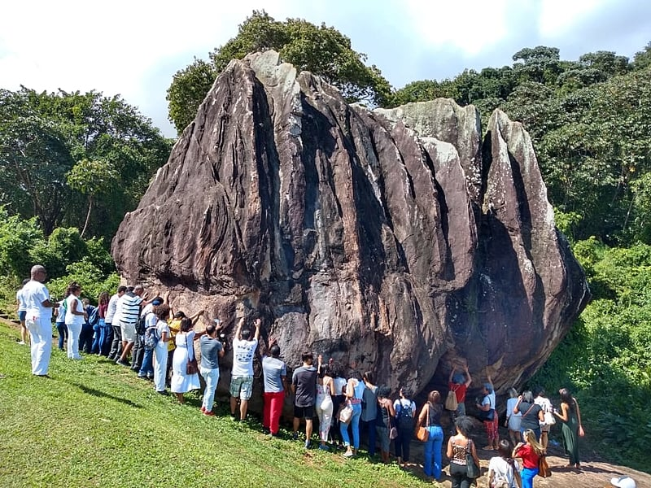
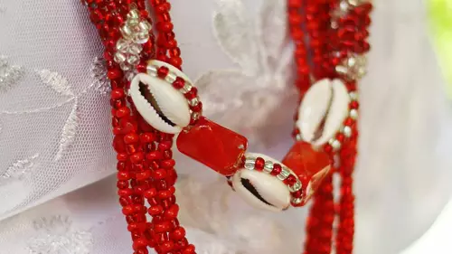
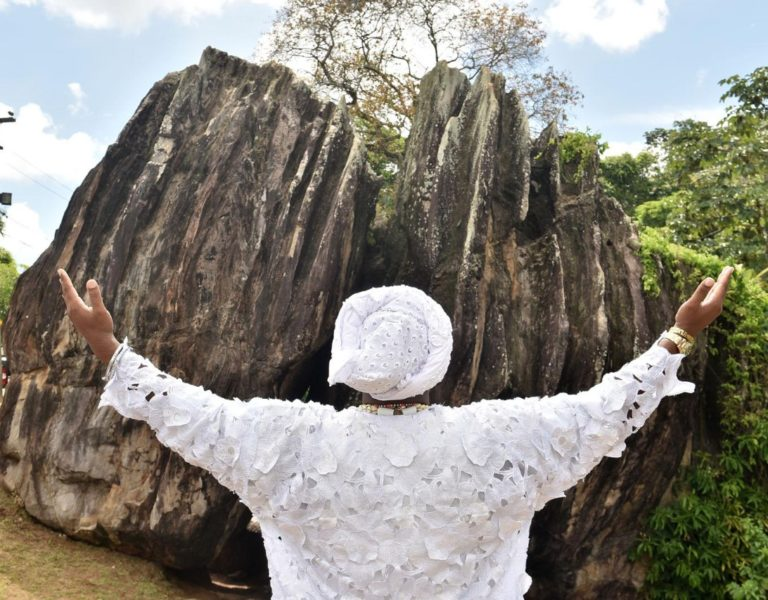

ORIXÁ DA JUSTIÇA
Justiça, Trovão, Pedreira, Equilibrio e Lei
" Hoje eu não peço vingança, pois eu confio na justiça de Xango. "
Quem é Xangô?

Xangô é um dos Orixás mais imponentes, majestosos e poderosos de todo o panteão iorubá; a força inabalável, o magnetismo e
a coragem deste bravo guerreiro abençoam a todos os seres na Terra através de sua Luz divina e de seu axé purificador. Nós,
seres encarnados e ainda em evolução espiritual, temos uma estranha, limitada e muitas vezes egoísta concepção sobre o real
significado da Justiça. Se alguém nos faz algo que julgamos errado, prejudicial ou ofensivo, logo clamamos fervorosamente para
que seja feita a Justiça divina e que o culpado seja punido. Porém, o que esperamos na realidade íntima de nossos corações não
é a correção do erro, mas sim que essa pessoa que nos fez mal também sofra exatamente do mesmo mal que nos causou — ou de
qualquer outro castigo igual, ou pior do que a pessoa fez conosco, pagando assim, com dor, pelos seus atos impensados.
Bom, isso definitivamente não é Justiça; isso é pura vingança mascarada de retidão. A concepção cotidiana de justiça que a
humanidade possui ainda é fortemente baseada na antiga e arcaica Lei de Talião: “Olho por olho, dente por dente”, além de ser
profundamente influenciada pela concepção romana de aplicação do direito punitivo e frio. Porém, para as divindades superiores
não é dessa forma punitiva que as coisas ocorrem no universo.
Porém, para as divindades superiores não é dessa forma punitiva que as coisas ocorrem no universo. Por vezes, o simples
fato de o arrependimento sincero ocorrer no coração do ofensor, seguido pelo ato daquele que nos fez mal de pedir perdão
e reconhecer a falha, já incorre plenamente na justiça espiritual feita, reequilibrando os laços energéticos. O Orixá que
rege, equilibra e representa a justiça cósmica é Xangô, e também representa a razão pura, a lógica e o intelecto equilibrado.
Quando tudo em uma situação está resolvido de forma estritamente racional, pesando todos os fatores envolvidos, a verdadeira
justiça estará finalmente consolidada. Nem sempre o que este poderoso Orixá fará diante de um clamor nosso é o que nós
egoisticamente queremos, ou do jeito puramente humano, imediatista e falho que desejamos que aconteça. Xangô nos ensina
diariamente que devemos apenas equilibrar os pratos da balança universal novamente, devolvendo a harmonia onde houve excesso
ou falta, e jamais desejar o mal, o sofrimento ou a destruição ao nosso próximo. Até porque a nossa visão terrena sobre o que
é justo ou injusto é extremamente limitada, fragmentada e subjetiva, mudando de acordo com os nossos próprios interesses
pessoais.
Podemos citar como exemplo o fato de que podemos achar que certo cerceamento, limite ou castigo dos pais aplicado aos
adolescentes é algo perverso, autoritário e injusto; porém, de uma forma ou de outra, essa atitude está sendo tomada visando
o bem-estar e a proteção futura daquele jovem. Na visão limitada do adolescentee, está tudo completamente errado e injusto; já
na visão experiente dos pais, está tudo absolutamente certo e necessário. Dessa forma, esse exemplo cotidiano mostra claramente
a importância de se enxergar a perspectiva dos dois lados antes de emitir um julgamento definitivo. O mesmo princípio se aplica
perfeitamente ao Orixá, que é onisciente, detém a sabedoria e vê todas as faces ocultas de todas as situações; por isso, ao pedir
justiça e clamar pelo nome de Xangô, deve-se ter extremo discernimento, cautela e pureza de intenção. O que o ser humano deve
realmente fazer em casos de injustiça e sofrimento é colocar em pauta, com muita honestidade mental, a real necessidade e o
verdadeiro merecimento de um pedido feito no altar. A postura correta seria mentalizar e dizer: “Pai Xangô, se for de minha
real necessidade e do meu justo merecimento, e se este meu clamor estiver totalmente dentro da Lei Maior e da Justiça de Deus,
que ele seja feito e cumprido…”, etc. Lembre-se sempre, com muito respeito e temor reverente, de que o machado sagrado de Xangô
tem corte afiado nos dois lados, podendo atingir tanto o acusado quanto o próprio acusador caso este também esteja em erro.
Entrando agora detalhadamente na parte do sincretismo religioso e cultural, podemos colocar que, dependendo das suas
qualidades, falanges e linhas de atuação espiritual, Xangô pode se apresentar sincretizado na Igreja Católica como São Jerônimo
ou também como São João Batista. São Jerônimo nasceu na região da Dalmácia, na antiga Iugoslávia, e dedicou praticamente toda
a sua vida terrena aos estudos profundos e minuciosos das escrituras sagradas cristãs. Em Roma, ele estudou com afinco o latim,
o grego e outros idiomas antigos com o objetivo claro de aumentar o seu arcabouço intelectual e traduzir os textos sagrados
para o povo. O Santo decidiu, em determinado momento de sua jornada, fazer severas penitências em um deserto isolado, pois ele
reconhecia que era um homem muito orgulhoso, vaidoso e detentor de um temperamento extremamente difícil e explosivo. Ao retornar
à Itália após esse período de reflexão e isolamento, foi nomeado secretário de Santo Ambrósio, mas este faleceu rapidamente,
fazendo com que o próprio Jerônimo ficasse responsável por seus complexos afazeres administrativos e espirituais, os quais ele
desempenhou com extrema sabedoria, justiça e dedicação até o fim de seus dias.
Por outro lado, São João é o famoso Santo católico diretamente relacionado às tradicionais fogueiras, celebrations e festas
do mês de junho no Brasil e no mundo. O dia oficial de celebração litúrgica desse importante santo é o dia 24 de junho e
conecta-se historicamente aos antigos festivais do solstício de verão que ocorriam no hemisfério norte, mais especificamente na
Europa. O nascimento histórico de São João Batista foi estipulado nesse dia e a celebração cristã foi inteligentemente
incorporada a diversos rituais pagãos de fertilidade e colheita que eram parte intrínseca das culturas europeias até aquele
período medieval. "Kaô Kabecilê" é uma belíssima, forte e tradicional expressão em língua Nagô que significa literalmente
“Venham Saudar o Rei” ou "Olhem para o Rei". Usa-se tradicionalmente essa poderosa expressão e saudação quando a vibração de
Xangô se faz presente na Terra ou quando o Orixá manifesta o seu axé, sendo que, durante muito tempo de sua história mítica e
dinástica, ele foi o governante e o Rei de Oyó, cidade-estado onde se consagrou definitivamente como o Deus supremo da justiça,
do fogo e do trovão.
Elementos ligados a Xangô;

Os elementos sagrados que dão sustentação ao axé de Xangô na natureza manifestam toda a sua imponência telúrica e cósmica
através de matérias brutas, fenômenos meteorológicos e símbolos de poder que traduzem a sua essência justa e inabalável. O
principal trono de sua força na Terra são as pedreiras e as grandes rochas milenares, pois a pedra representa a estabilidade
eterna, a solidez que não se corrompe com o tempo e a base rígida onde nenhuma mentira ou injustiça consegue se sustentar sem
ser esmagada. Quando olhamos para o céu, o raio é a sua arma de execução rápida, rasgando as nuvens com uma velocidade
impressionante para cortar as demandas, quebrar feitiços e clarear as mentes obscurecidas pela ilusão, enquanto o trovão é
a sua própria voz retumbante que ecoa pelo universo para lembrar os seres humanos de sua pequenez diante das leis divinas. O
fogo é o elemento dinâmico que queima as impurezas, purifica os caminhos e consome a injustiça com o calor de sua verdade,
manifestando-se também no magma fervente que corre nas profundezas dos vulcões e molda a própria estrutura do planeta.
Entre as ferramentas litúrgicas que concentram o seu poder, destaca-se soberano o Oxê, o seu machado sagrado de duas
lâminas opostas e perfeitamente simétricas que corta a ilusão, a mentira e a injustiça com a precisão de um raio. Esta
ferramenta litúrgica, esculpida em madeiras nobres e robustas ou fundida em metais pesados como o cobre e o bronze, não é
apenas uma arma de guerra para derrotar inimigos físicos, mas sim o maior símbolo da justiça cósmica, della neutralidade
absoluta e do equilíbrio que rege o universo. O formato bicefálico do Oxê carrega um mistério profundo e uma lição de moral
rigorosa para todos os seres humanos, pois suas duas lâminas idênticas e voltadas para lados contrários cortam tanto para a
frente quanto para trás, servindo como um aviso constante de que a justiça divina é inteiramente imparcial e não possui protegidos
ou privilegiada. Isto significa que, quando um devoto clama pelo nome de Xangô e evoca o poder do seu machado para punir uma
injustiça sofrida, a ferramenta divina faz um movimento completo no espaço: a primeira lâmina vai em direção ao acusado para
cobrar o erro, mas a segunda lâmina retorna imediatamente em direção ao próprio acusador para avaliar as suas próprias falhas,
a sua conduta moral e a pureza de suas intenções. Se quem pediu justiça também estiver em erro, for orgulhoso, hipócrita ou agir
por pura vingança, será atingido com a mesma força e severidade pelo corte de retorno do próprio machado que invocou, pois na
balança do Rei de Oyó ninguém consegue esconder a verdade.
Além desse rigor punitivo, o Oxê representa graficamente a própria estrutura da mente equilibrada e da razão pura que Xangô
defende, onde o cabo central funciona como o eixo da firmeza, do discernimento e do bom senso, enquanto as duas asas laterais
simbolizam a necessidade absoluta de se enxergar sempre os dois lados de uma mesma questão, pesando os argumentos, as
circunstâncias e as dores de cada parte envolvida antes de se emitir qualquer julgamento definitivo. O machado de Xangô é a
materialização de que o verdadeiro poder não reside na força bruta que destrói cegamente, mas sim na autoridade moral que
reestabelece a ordem e a harmonia onde houve excesso, fazendo com que a verdade prevaleça soberana acima das vaidades humanas,
das paixões momentâneas e dos interesses pessoais de quem quer que seja. Há também a sua coroa real, que evoca o seu passado
dinástico como o Alafim (imperador) supremo da cidade-estado de Oyó, o Edun Ará (a pedra de raio) que é o talismã meteorológico
gerado pelo impacto do raio no solo, e o Xerê, o chocalho de cobre que imita o barulho da chuva e dos trovões para saudar a sua
chegada nos terreiros. No reino vegetal, Xangô estende o seu axé sobre árvores frondosas e de troncos robustos como o gamaleira
branca, além de plantas de folhas largas e firmes que carregam propriedades quentes e curativas, usadas para banhos de purificação
e proteção. Até mesmo na alimentação o seu rigor se faz presente através do Amalá, a sua comida sagrada feita à base de quiabos
cortados bem finos, camarão seco, azeite de dendê e carne, que deve ser servida ainda fumegante no bronze ou na gamela de madeira,
simbolizando a união da comunidade, a fartura e a partilha justa dos recursos do reino. Todos esses elements combinados, a firmeza
da rocha, a velocidade do raio, o calor do fogo, o corte do machado e a liturgia do Amalá formam um ecossistema espiritual
completo que mostra que o culto a Xangô não é apenas a busca por uma divindade isolada, mas sim a sintonização profunda com as
forças mais pesadas, dinâmicas e equilibradas que regem a mecânica do próprio universo.
Itãs: Histórias Mitolôgicas de Xangô;

As itãs são os mitos e histórias sagradas dos Orixás, passadas de geração em geração, que carregam profundos ensinamentos
filosóficos. No caso de Xangô, as suas histórias sempre giram em torno da justiça, do orgulho, das consequências dos próprios atos
e da necessidade de equilíbrio. Aqui estão duas das principais itãs de Xangô e as lições de moral que elas carregam, mantendo tudo
estruturado em um único parágrafo contínuo, conforme o formato que você prefere:
A Itã do Machado de Dois Gumes e a Queda pelo Orgulho: Conta o mito que Xangô, enquanto Rei de Oyó, era um guerreiro imbatível
e extremamente vaidoso de seu poder político e militar. Para demonstrar sua supremacia e aterrorizar seus inimigos, ele subiu a um
monte e começou a testar um novo feitiço que controlava os raios e os trovões, lançando-os do céu com fúria. No entanto, por causa
de sua arrogância e falta de controle sobre a própria força, um dos raios ricocheteou e caiu direto sobre o seu próprio palácio,
destruindo o reino e matando grande parte de seus súditos e de sua própria família. Diante da devastação que ele mesmo causou por
pura vaidade, Xangô foi tomado por uma profunda vergonha e tristeza, o que o levou a bater o seu machado bicefálico (o Oxê) na
terra e se transformar em um Orixá. A lição de moral dessa história é o fundamento do ditado "o machado de Xangô corta para os dois
lados": a justiça divina não escolhe protegidos e a força sem sabedoria destrói o próprio indivíduo. Ela ensina que quem evoca a
justiça ou usa o poder deve ser o primeiro a agir com responsabilidade, pois o castigo para a arrogância e para a prepotência vem
na mesma moeda, mostrando que ninguém está acima das leis universais.
A Itã de Xangô, Oxum e o Banquete dos Reis: Em outra passagem famosa, Xangô ofereceu um grande banquete em seu palácio para
todos os reis e dignitários das terras vizinhas, buscando ostentar sua riqueza, fartura e generosidade. Para garantir que tudo
fosse perfeito, he ordenou que sua esposa Oxum preparasse o banquete, exigindo que a comida fosse a melhor já servida no mundo.
Oxum, conhecendo a vaidade do marido, cozinhou pratos maravilhosos, mas, no momento de servir, ela colocou pequenas pedras e
pedaços de ferro misturados no meio da comida de Xangô, enquanto os convidados receberam pratos perfeitos. Ao morder a comida, o
rei quebrou os dentes e ficou furioso, prestes a castigar Oxum ali mesmo diante de todos. Com calma, Oxum explicou que a comida
representava o próprio governo dele: por fora parecia belo, farto e reluzente para os de fora verem, mas por dentro estava duro,
pesado e machucando o seu próprio povo com impostos e exigências severas. Xangô, que é o senhor da razão, reconheceu imediatamente
o seu erro, engoliu o orgulho e pediu desculpas publicamente à esposa e aos súditos. A lição de moral dessa itã mostra que a
verdadeira justiça começa com a autocrítica e com a capacidade de ouvir verdades duras sem reagir com violência. Xangô nos ensina
aqui que um líder ou um juiz justo deve governar com a razão e com o coração, corrigindo os seus próprios excessos antes de querer
ditar as regras para o mundo.
A Itã de Xangô e o Julgamento dos Ladrões de Alimento: Conta o mito que, durante uma época de grande seca e escassez no reino,
o povo de Oyó estava passando fome e os estoques de comida do palácio real precisavam ser severamente racionados. Diante do
desespero, um grupo de súditos resolveu invadir os celeiros reais durante a noite para roubar sacos de grãos, mas eles foram
capturados em flagrante pelos guardas e levados imediatamente ao tribunal para serem julgados pelo próprio rei. Os conselheiros
de Xangô, enfurecidos com a ousadia do crime em um momento de crise, clamavam pela execução imediata de todos os envolvidos como
forma de exemplo para o resto da população. Xangô, no entanto, antes de proferir a sentença, ordenou uma investigação profunda
sobre a vida daquelas pessoas e descobriu que nenhum deles tinha histórico de crimes, que todos eram trabalhadores honestos e que
o roubo foi motivado exclusivamente pelo desespero de verem seus filhos pequenos morrendo de desnutrição em casa. Em vez de
condená-los à morte, o Rei de Oyó mandou soltá-los, confiscou parte das riquezas dos conselheiros gananciosos que ostentavam
fartura e distribuiu os grãos de forma justa para todas as famílias necessitadas do reino, punindo severamente apenas aqueles que
tentavam lucrar com a miséria alheia. A lição de moral dessa história é o que a verdadeira justiça nunca pode ser cega, fria ou
aplicada de forma automática sem analisar o contexto e a causa da falha humana. Xangô nos ensina com isso que a aplicação da lei
deve sempre caminhar de mãos dadas com a equidade, com a empatia e com a razão, mostrando que punir a fome sem resolver a miséria
é, por si só, uma das maiores injustiças que um governante ou um juiz pode cometer.
Significado espiritual de ser filho de Xangô;

Ser filho de Xangô, nas religiões de matriz africana como o Candomblé e a Umbanda, carrega um significado espiritual
profundamente robusto que vai muito além de herdar uma personalidade forte ou ostentar a soberania de um rei. Na verdade, essa
filiação representa um compromisso de alma de grande magnitude: ser filho deste Orixá significa, fundamentalmente, precisar da
orientação e das características dele para caminhar com retidão e equilíbrio na Terra. Xangô é o senhor absoluto da justiça divina,
do trovão, do fogo e da ponderação, e o seu principal símbolo, o machado de duas lâminas conhecido como Oxé, serve como um
lembrete constante de que a justiça divina corta para os dois lados, exigindo do devoto uma conduta moral extremamente rígida.
Por possuírem uma essência visceralmente ligada ao elemento fogo e ao arquétipo do poder, os filhos de Xangô frequentemente
manifestam traços de forte impulsividade, um orgulho imponente e um desejo ardente de impor sua própria visão de mundo sobre
os demais. É exatamente por causa dessa intensidade avassaladora que a intervenção, o freio e o direcionamento espiritual do
Orixá tornam-se absolutamente vitais na vida dessas pessoas. Sem a orientação constante de Xangô, a busca natural do filho por
justiça corre o grave risco de se degenerar em autoritarismo tirânico, e a sua firmeza característica pode facilmente virar uma
teimosia cega e destrutiva. Portanto, o Orixá atua como um mestre supremo e um farol indispensável para a cabeça, ou Ori, de seu
iniciado, lapidando as arestas brutas dessa personalidade expansiva para que o indivíduo aprenda, por meio da fé, a trocar a
cólera pela razão e o julgamento precipitado pela sabedoria de um verdadeiro governante.
Incorporar as características de Xangô não deve ser visto como um privilégio estático ou um motivo de vaidade, mas sim como um
exercício diário de aprendizado e superação, no qual o devoto é continuamente convocado a desenvolver a imparcialidade, a
diplomacia, a paciência e a capacidade de liderar com dignidade e resiliência mesmo nos momentos de maior crise. O fogo que Xangô
traz para a vida de seus filhos não tem o objetivo de destruí-los, mas sim de purificá-los espiritualmente, ensinando-os a passar
pelas grandes provações da vida sem se deixar consumir pelas chamas da vaidade e a transformar as maiores dificuldades em poder
real de superação. No fim, a filiação espiritual com o Rei de Oyó constitui um pacto de imensa responsabilidade e eterno
aprendizado, onde o filho reconhece, com humildade, que necessita da energia vital e do axé de seu pai para acalmar o próprio
calor interno, aprendendo a governar a si mesmo e a influenciar o mundo ao seu redor com retidão, sabedoria, tolerância e uma
profunda misericórdia. Ser filho de xangô vai além dos estereótipos, ter esse orixá junto de você e da sua energia vai além da
iniciação e uma rotina no terreiro, suas atitudes tem uqe estar alinhadas ao querer do orixá sobre sua vida e, além de tudo, deve
se ter coragem nos objetivos e não temer a injustiças. Assim como esse poderoso orixá, o filho de Xangô também acredita no poder
da justiça. Ele não se envolve com aquilo que está errado, fazendo sempre o certo pelo certo. Dessa maneira, a pessoa compra
qualquer briga se for para defender os bons valores e fazer justiça. Isso também faz com que ele seja um grande exemplo de otimismo
e de autoconfiança. Assim, o filho de Xangô é um grande vencedor na vida.
A ambição também faz parte das características do filho de Xangô. Em outras palavras, ele enxerga o futuro com brilho
nos olhos, ansiando pelo crescimento nas áreas profissionais e acadêmicas. He não prejudica ninguém por maldade ou ambição,
no entanto sua autoestima o coloca como merecedor do topo nas mais variadas situações. Isso acontece porque o filho de Xangô preza
mais pela justiça do que pela ambição. filho de Xangô é uma pessoa muito especial. Ele possui um carisma natural que chama a atenção
em todos os lugares onde vai. Ele é muito amado e sempre recebido com muito carinho. Com efeito, essa presença ilumina o ambiente,
fazendo com que todos deem bastante risada e se sintam seguros. No entanto, ele prefere ficar sozinho do que passar por situações
de cobrança e ciúmes com o parceiro.